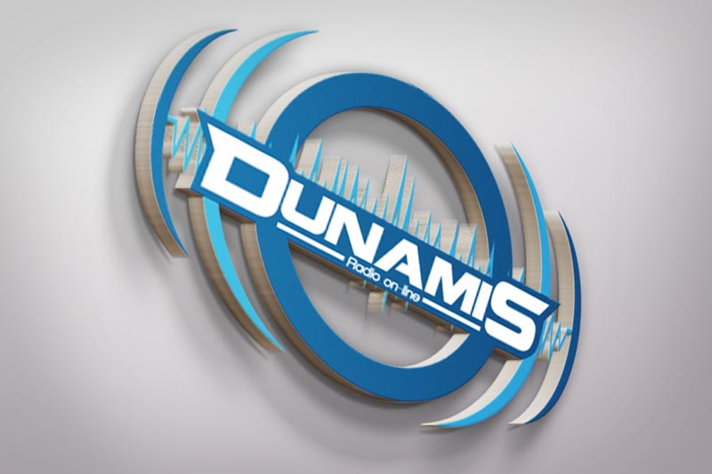
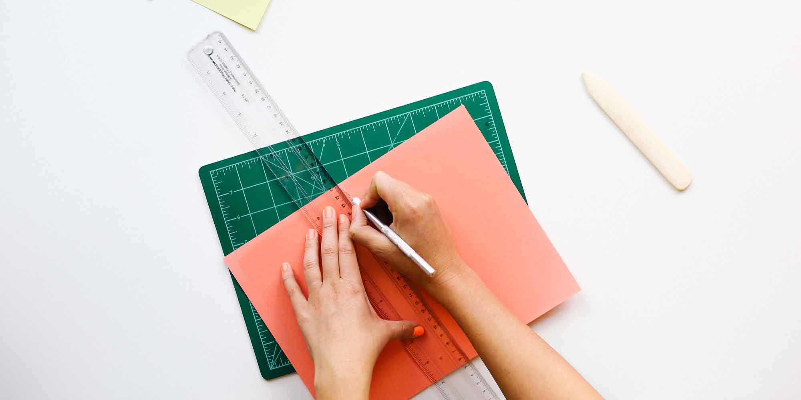

Dunamis Radio On-line
Branding // Logo Design



Detalles
Dunamis Radio On-line es un proyecto de radio por internet que busca causar impacto a tráves de su contenido edificante y programación de un contenido para todo público.
View Live Project-
Cliente
Dunamis Radio On-line
-
Desarrollos
Identidad y Diseño de Logotipo
-
Fecha
4/10/2013